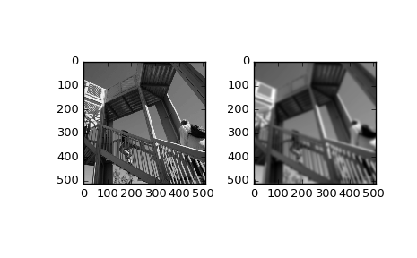

scipy.ndimage.fourier_gaussian¶
-
scipy.ndimage.fourier_gaussian(input, sigma, n=-1, axis=-1, output=None)[source]¶ Multi-dimensional Gaussian fourier filter.
The array is multiplied with the fourier transform of a Gaussian kernel.
Parameters: input : array_like
The input array.
sigma : float or sequence
The sigma of the Gaussian kernel. If a float, sigma is the same for all axes. If a sequence, sigma has to contain one value for each axis.
n : int, optional
If n is negative (default), then the input is assumed to be the result of a complex fft. If n is larger than or equal to zero, the input is assumed to be the result of a real fft, and n gives the length of the array before transformation along the real transform direction.
axis : int, optional
The axis of the real transform.
output : ndarray, optional
If given, the result of filtering the input is placed in this array. None is returned in this case.
Returns: fourier_gaussian : ndarray or None
The filtered input. If output is given as a parameter, None is returned.
Examples
>>> from scipy import ndimage, misc >>> import numpy.fft >>> import matplotlib.pyplot as plt >>> fig, (ax1, ax2) = plt.subplots(1, 2) >>> plt.gray() # show the filtered result in grayscale >>> ascent = misc.ascent() >>> input_ = numpy.fft.fft2(ascent) >>> result = ndimage.fourier_gaussian(input_, sigma=4) >>> result = numpy.fft.ifft2(result) >>> ax1.imshow(ascent) >>> ax2.imshow(result.real) # the imaginary part is an artifact >>> plt.show()
